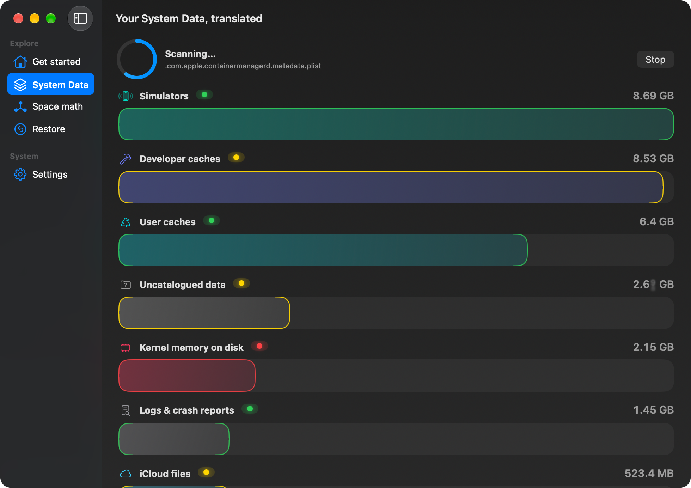

macOS ti dice solo “Dati di sistema: 56 GB”. Clean system data ti mostra
cosa c'è davvero, voce per voce, con un semaforo che ti dice cosa puoi cestinare
in tranquillità — e cosa non devi toccare.
Interfaccia completa in 🇮🇹 Italiano · 🇬🇧 English · 🇪🇸 Español
La Stratigrafia: i tuoi dati di sistema come carotaggio geologico — ogni strato è una categoria.
Come funziona
Tre passaggi. Nessuna impostazione tecnica, nessun terminale.
ScansionaInventario di cache, log, snapshot, build di sviluppo, backup e altro — misurato sul tuo disco, non stimato.
CapisciOgni voce ha un semaforo deciso da regole deterministiche e una spiegazione in italiano chiaro, voce per voce (opzionale: analisi AI).
Cestina — e ripensaNiente viene cancellato direttamente: tutto va nel Cestino con Annulla sempre disponibile, via manifest interno.

Durante la scansione gli strati si depositano uno a uno, in tempo reale.
Un semaforo, zero ansia
Il verdetto non è un'intelligenza artificiale che "pensa": è un insieme di regole deterministiche e trasparenti.
Verde — cestinabile
Cache e log che si rigenerano da soli. Verificati voce per voce sulla tua versione di macOS.
Giallo — attenzione
Utile ma delicato: l'app ti guida passo-passo invece di cancellare alla cieca.
Rosso — non toccare
Snapshot, backup iPhone, volumi di sistema: spiegati per bene e mai proposti per l'eliminazione.
🗑️
Trash-first, sempre
Nessuna cancellazione diretta: tutto passa dal Cestino, con il Put Back garantito dal nostro manifest (quello di macOS è notoriamente inaffidabile).
↩️
Annulla vero
Manifest interno di undo: ripristino nella posizione originale anche dopo aver svuotato, con gestione delle collisioni.
🔒
Privacy totale
Niente telemetria, niente analytics, niente upload dei tuoi file. La scansione non manda nulla a nessuno. Label “Data Not Collected”.
🧠
AI che spiega, non decide
L'analisi AI (opzionale) spiega il verdetto già deciso dalle regole — non può mai cambiarlo. Mai contenuti dei file: solo nome e percorso.
📏
Matematica dello spazio
Perché “256 GB” diventano 245, cos'è lo spazio purgeable, quanto è davvero libero: spiegato senza gergo.
🌍
Tre lingue complete
Interfaccia, spiegazioni e knowledge base interamente in italiano, inglese e spagnolo — non una traduzione automatica.
Domande frequenti
Le cose che chiunque chiederebbe prima di fidarsi.
È sicuro? Può rompere il mio Mac?
Il semaforo rosso copre tutto ciò che è vitale (snapshot, backup, volumi di sistema) e viene rifiutato a livello di codice: anche selezionandolo, l'eliminazione parte. Tutto il resto passa dal Cestino con Annulla.
Cosa sono le “richieste AI incluse”?
L'acquisto include un tetto di analisi AI gratuite, conteggiate per la tua licenza. Quando finiscono, l'app continua a funzionare al 100% — puoi aggiungere la tua chiave API per continuare le analisi AI.
Vedete i miei file?
No. Nessuna telemetria, nessun upload. L'AI opzionale riceve solo il nome e il percorso della voce con il verdetto già deciso — mai il contenuto dei file.
Funziona sul mio Mac?
macOS 13 o superiore, Apple Silicon e Intel. L'app richiede l'Accesso completo al disco per leggere le dimensioni reali dei dati di sistema — te lo chiede con una guida, e puoi anche usarlo senza concedendolo.
Torna a padrone del tuo disco
Una licenza, un acquisto solo. Include il tetto di analisi AI gratuite.